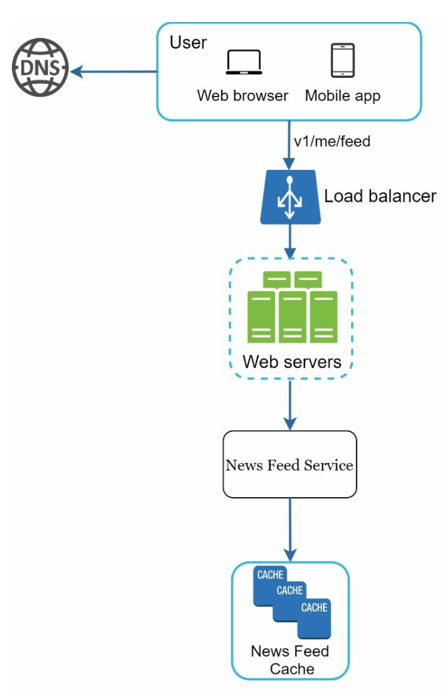
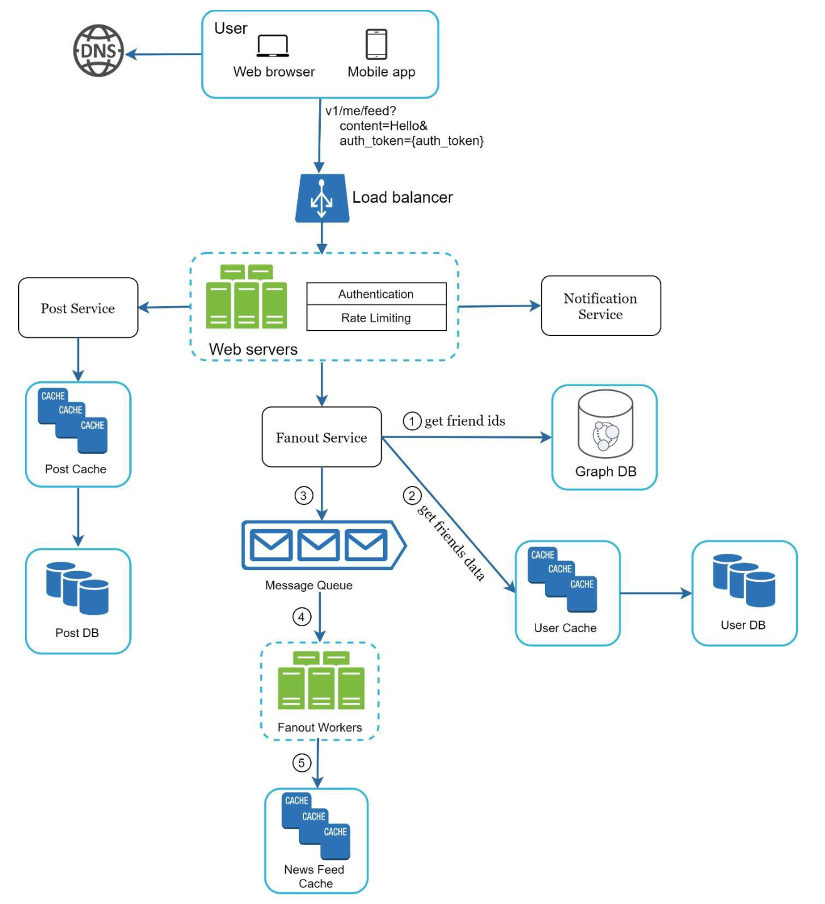
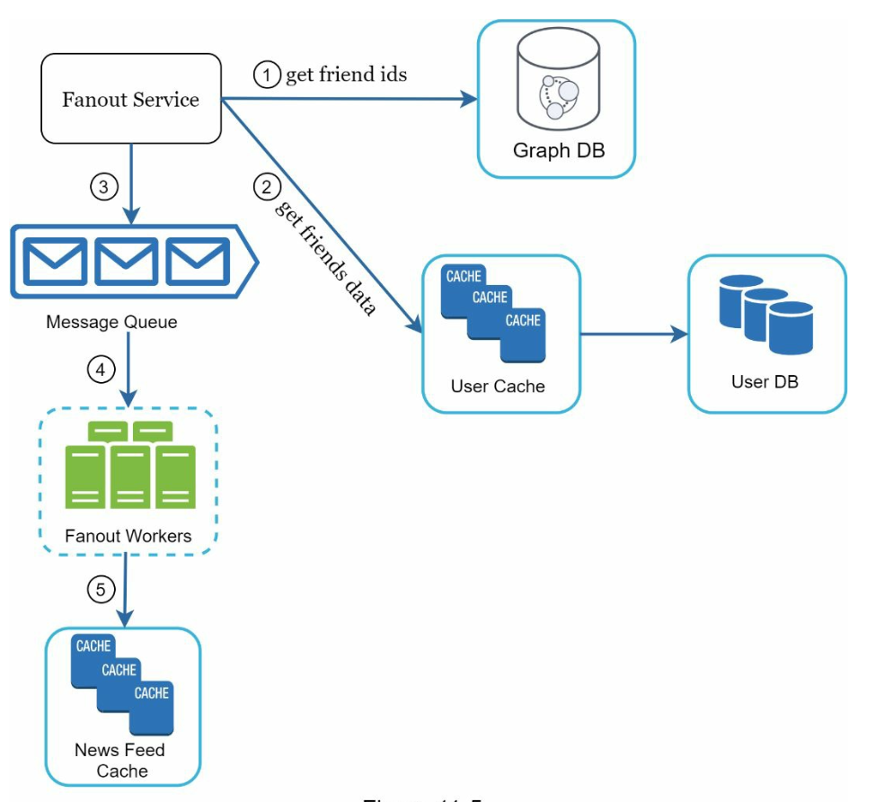

Chapter 11: Design a News Feed System
Introduction
A news feed system displays a constantly updating list of posts (status updates, photos, videos, and links) from a user’s connections. Examples include Facebook’s news feed, Instagram’s feed, and Twitter’s timeline. This chapter explores the design of a scalable news feed system.
Step 1: Understanding the Problem
Requirements
1. Platform: The system supports both web and mobile apps.
2. Features:
- Users can publish posts.
- Users can view posts from friends in their news feed.
- Users can have up to 5,000 friends.
- 10 million daily active users (DAU).
- Feeds may include text, images, and videos.
3. Sorting: Feeds are sorted in reverse chronological order for simplicity.
4. Scale:
Step 2: High-Level Design
Overview
The design includes two main flows:
1. Feed Publishing: A user publishes a post, which is written to the database and propagated to their friends’ feeds.
2. News Feed Building: A user retrieves their news feed by aggregating posts from friends in reverse chronological order.
News Feed APIs
1. Feed Publishing API:
- Endpoint:
POST /v1/me/feed - Params:
content(post text) andauth_token(authentication).
2. News Feed Retrieval API:
- Endpoint:
GET /v1/me/feed - Params:
auth_token(authentication).
Feed Publishing

1. User Interaction: The user publishes a post via the feed publishing API.
2. Load Balancer: Distributes traffic to web servers.
3. Web Servers: Authenticate requests and redirect to services.
4. Post Service: Stores the post in the database and cache.
5. Fanout Service: Propagates the post to friends’ news feeds in the cache.
6. Notification Service: Sends notifications to friends.
News Feed Building

1. User Interaction: The user requests their news feed via the retrieval API.
2. Load Balancer: Distributes traffic to web servers.
3. Web Servers: Forward requests to the news feed service.
4. News Feed Service: Fetches post IDs from the news feed cache and retrieves complete post details from the database or cache.
Step 3: Design Deep Dive
Feed Publishing Deep Dive
1. Web Servers:
- Authenticate users using
auth_token. - Enforce rate limits to prevent spam.
2. Fanout Service:
- Fanout on Write: Push posts to friends’ feeds at write time.
- Pros: Real-time updates, fast feed retrieval.
- Cons: Resource-intensive for users with many friends.
- Fanout on Read: Pull posts at read time.
- Pros: Efficient for inactive users.
- Cons: Slower feed retrieval.
- Hybrid Approach: Use a push model for most users and a pull model for high-connection users (e.g., celebrities).

The fanout service works as following:
1. Fetch Friend IDs: Retrieve the friend list from a graph database.
2. Filter Friends from Cache: Access user settings in the cache to exclude certain friends (e.g., muted friends or selective sharing preferences).
3. Send to Message Queue: Send the filtered friend list along with the new post ID to a message queue for processing.
4. Fanout Workers: Workers retrieve data from the message queue and update the news feed cache. The cache stores
5. Store in News Feed Cache: Append new post IDs to the friends’ news feed cache. A configurable limit ensures that only recent posts are stored, as most users focus on the latest content, keeping cache memory consumption manageable.

News Feed Retrieval Deep Dive
Cache Architecture
The cache is divided into five layers:
1. News Feed Cache: Stores post IDs for quick retrieval.
2. Content Cache: Stores post details (popular posts in hot cache).
3. Social Graph Cache: Stores user relationship data.
4. Action Cache: Tracks user actions (likes, replies, shares).
5. Counter Cache: Maintains counts for likes, replies, followers, etc.

Key Optimizations
Scaling
1. Database Scaling:
- Horizontal scaling and sharding.
- Use of read replicas for high-traffic queries.
2. Stateless Web Tier: Keep web servers stateless to enable horizontal scaling.
Caching
1. Store frequently accessed data in memory.
2. Use cache layers to reduce latency and database load.
Reliability
1. Consistent Hashing: Distribute requests evenly across servers.
2. Message Queues: Decouple system components and buffer traffic.
Monitoring
1. Track key metrics like QPS (queries per second) and latency.
2. Monitor cache hit rates and adjust configurations accordingly.